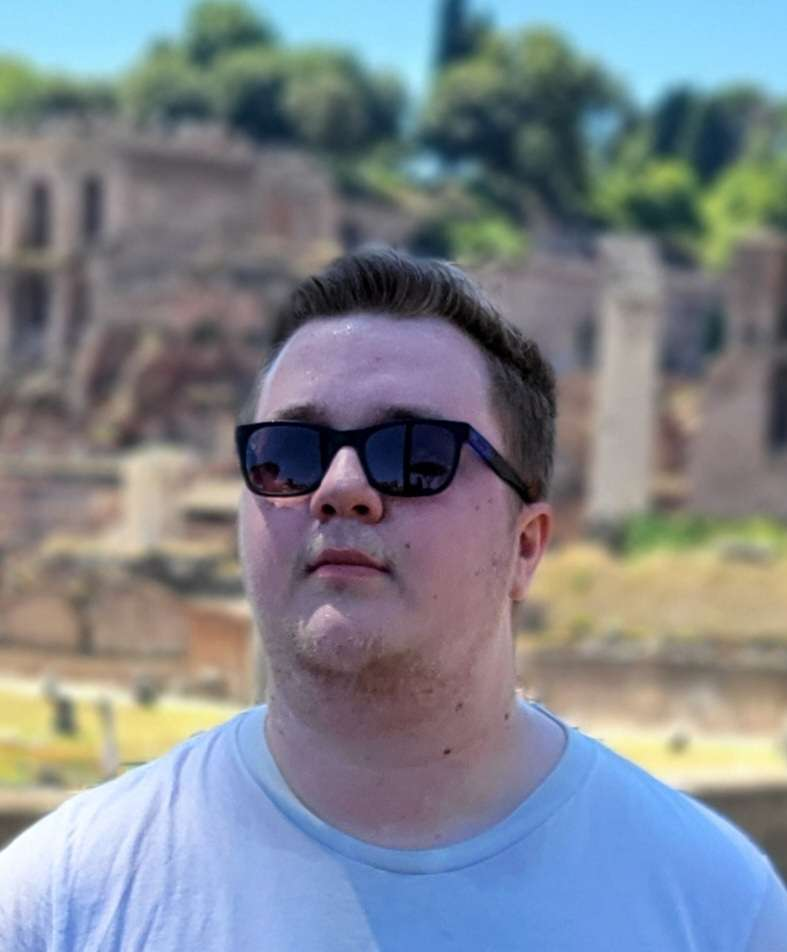

Abel's Resume

Summary
I am a hardworking but also a fun person that doesn't mind going the extra mile to get the job done.
Education
- MBO 3 - Handhaving, Toeizcht en Veiligheid
Mbo College Almere / 2018-2020
- MBO 4 - Juridisch Administratief Dienstverlener
Mbo College Poort / 2020-2023
- Associate Degree - Software Development
Windesheim Almere / 2024-2026
Work Experience
Stichting DUWO
Internship
During my internship at DUWO I was responsible for contact with our renters, which mainly consited of students, national and international, to answer all of the questions they had,
ranging from questions about where they can deposit trash to questions about their contracts.
- September 2021 - Jan 2022
- February 2023 - June 2023
Part-time
In the summer of 2022 I came back to DUWO to help out during the summer months, I resumed the same resposibilities that I had during my internship, and I also helped out
in the 'Key' project group. We ensured that we had all the keys for the international students that would be arriving during specific time frames.
- June 2022 - August 2022
Skills
Languages
Dutch - Native Speaker
English - Fluent
General Skills
Presenting/Public Speaking - Very Good
Communication - Good
Programming
HTML - Beginner
CSS - Beginner
MySQL - Beginner
PHP - Beginner
GitHub
Awards and Certifications
KPMG Jan Hommen Scholarship
Finalist and Winner - 2020